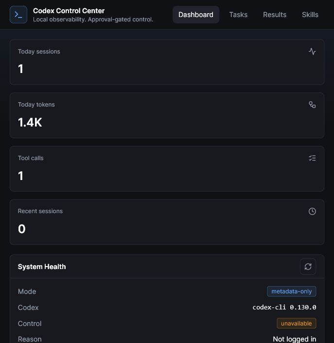

public-safe draft
v0.1.0
A local Control Center for Codex
Visibility, organization, and safer launch controls for local Codex workflows.
A local Control Center for Codex
local-first
No API key required for local observation
Reads local metadata, avoids prompt/output storage by default, and never reads Codex auth files.
observe modelocal
auth filesnever read
raw promptsnot stored
controlapproval-gated
Observe local Codex metadata without exposing private content
dashboard
Health, usage, readiness, sessions
Scan account-level usage signals, local setup health, workspace readiness, and recent activity.

Dashboard: health, usage, readiness, sessions
control
Approval-gated tasks, read-only first
Queue work safely. Workspace-write is explicit. Danger full access is blocked in V1.

Approval-gated tasks, read-only by default
review
Safe summaries and local skill visibility
Review durations, tool counts, result categories, next actions, and discovered skills.

Safe summaries, not raw logs
publishing
Check before sharing
Publish Readiness checks docs, fixtures, ignore coverage, local artifacts, and safety status.
commitno
pushno
uploadno
safety scanREADY
Publication checks without publishing anything
Codex Control Center v0.1.0
Local observability. Approval-gated control.
No API key required for local observation.
github.com/jqaisystems/codex-control-center
Open source, local-first, Windows-tested for V1